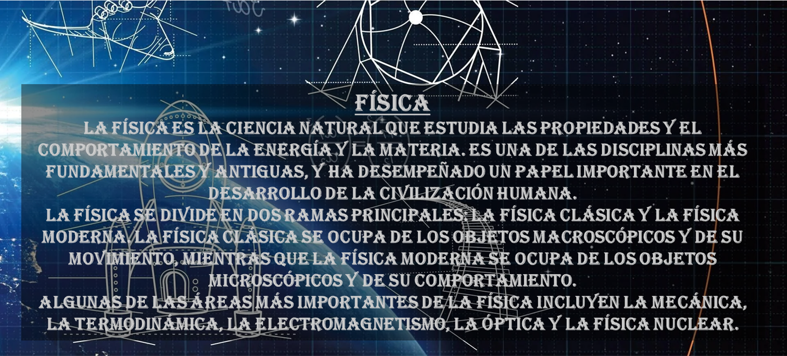
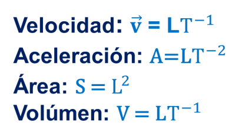

ÁLGEBRA
GEOMETRÍA
TRIGONOMETRÍA
FÍSICA
Cantidades Físicas
análisis dimensional
leyes de Newton
Primera
Segunda
Tercera
Fricción
MRU
MRUV
Caída libre
Mov parabólico
Mov semiparabólico
mov circunferencial
Trabajo
Energía mecánica
Energía cinética
Energía potencial gravitatoria
Energía elástica
Impulso
Choques o colisiones
mov armónico simple
Pedúnculo
Gravitación
Leyes de Kepler
Ondas mecánicas
Espectro electromagnético
Hidrostática
Calorimetría
Calorimetría I
Calorimetría II
Termodinámica
Termodinámica I
Termodinámica II
Electrostática
Electrostática I
Electrostática II
Eletrodinámica
Eletromagnetismo
Electromagnetismo I
Electromagnetismo II
Óptica
Óptica I
Óptica II
Física moderna
QUÍMICA

CONTENIDO
Cantidades físicas
Análisis dimensional
Leyes de Newton
Fuerza de fricción
Movimiento rectilíneo uniforme
Movimiento rectilíneo uniformemente variable
Movimiento de caída libre
Movimiento parabólico
Movimiento semiparabólico
Movimiento circunferencial
Trabajo mecánico
Energía mecánica (cinética, elástica y potencial gravitatoria)
Impulso
Choques o colisiones
Movimiento armónico simple
Pedúnculo
Gravitación universal
Leyes de Kepler
Ondas mecánicas
Espectro electromagnético
Hidrostática
Calorimetría
Termodinámica
Electrostática
Electrodinámica
Electromagnetismo
Óptica
Física moderna
CANTIDADES FÍSICAS
Fundamentales
ANÁLISIS DIMENSIONAL

LEYES DE NEWTON
1° LEY DE NEWTON
"Un objeto en reposo permanecerá en reposo, y un objeto en movimiento continuará moviéndose en línea recta a una velocidad constante, a menos que una fuerza externa actúe sobre él".
2° LEY DE NEWTON
también conocida como la ley de la fuerza o ley de la aceleración, establece la relación entre la fuerza aplicada a un objeto, su masa y la aceleración que experimenta. La ley se enuncia de la siguiente manera:
Fuerza = Masa x Aceleración
3° LEY DE NEWTON
"Para cada acción, hay una reacción igual y opuesta."
FRICCIÓN
MOVIMIENTO RECTILÍNEO UNIFORME
MOVIMIENTO RECTILÍNEO UNIFORMEMENTE VARIADO (MRUV)
MOVIMIENTO DE CAÍDA LIBRE
MOVIMIENTO PARABÓLICO
MOVIMIENTO SEMIPARABÓLICO
MOVIMIENTO CIRCUNFERENCIAL UNIFORME
TRABAJO
ENERGÍA MECÁNICA (EM)
Energía Cinética (EC)
Energía potencial gravitatoria (EPG)
ENERGÍA elástica (EK)
IMPULSO (I) Y CANTIDAD DE MOVIMIENTO (P)
CHOQUES O COLISIONES
MOVIMIENTO ARMÓNICO SIMPLE
PEDÚNCULO
GRAVITACIÓN UNIVERSAL
LEYES DE KEPLER
1° LEY DE KEPLER (ley de las órbitas):
Todo planeta gira alrededor del sol describiendo una trayectoria elíptica, y el sol se ubica en uno de sus focos.
2° LEY DE KEPLER (ley de las áres):
el radio vector que parte del sol hasta un planeta forma áreas que son directamente proporcionales a los tiempos.
3° LEY DE KEPLER (ley de periodos):
El cuadrado del periodo es directamente proporcional al cubo del radio medio.
ONDAS MECÁNICAS
.
Se propagan en cualquier sólido, líquido y gas, pero no es el vacío, y el medio de propagación se considera ideal
LONGITUDINALES
Es aquella en la que las partes del medio oscilan en la misma dirección de propagación de la onda
TRANSVERSALES
Es aquella en la cual la vibración es perpendicular a la dirección de la velocidad de propagación
ESPECTRO ELECTROMAGNÉTICO
HIDROSTÁTICA
CALORIMETRÍA I
OJO: el calor latente es la cantidad de calor que se necesita agregar o eliminar a una sustancia para cambiar su estado, ya sea de sólido a líquido (fusión), de líquido a gas (vaporización) o de gas a líquido (condensación) sin cambiar su temperatura.
CELSIUS:
Convertir
FAHRENHEIT:
KELVINS:
CALORIMETRÍA II
Formas o mecanismos de transferencia de calor:
TERMODINÁMICA I
En general, para un sistema cerrado se cumple lo siguiente:
PROCESOS TERMODINÁMICOS RESTRINGIDOS:
TERMODINÁMICA II
ELECTROSTÁTICA I
ELECTROSTÁTICA II
ELECTRODINÁMICA
ELECTROMAGNETISMO 1
ELECTROMAGNETISMO II
ÓPTICA I
ESPEJOS PLANOS:
Son todas las superficies pulimentadas en donde la energía luminosa se refleja en su totalidad.
ESPEJOS ESFÉRICOS:
Son aquellos que se originan de porciones de superficies esféricas (son casquetes), hay dos tipos: Convexo y Cóncavo. (Por si acaso, "C" significa centro, "F" significa foco y "V" signfica vértice)
.
-CONVEXO
Hay solamente un caso
-CÓNCAVO
Hay 4 casos (dependiendo de donde se encuentre la imagen, pero si la "imagen" está en el foco entonces no se forma imagen, por este motivo no se cuenta este caso).
ÓPTICA II
FÍSICA MODERNA